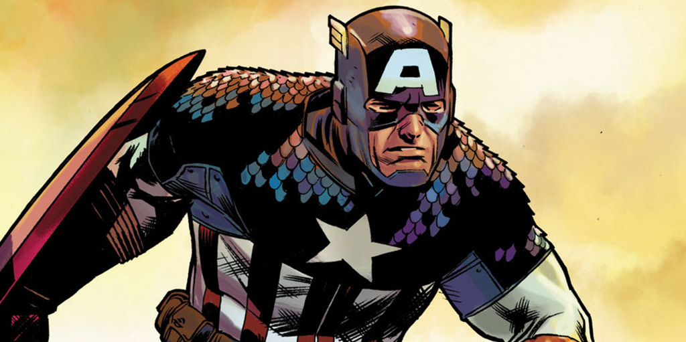

Капитан Америка
Во время Второй мировой войны юный Стивен Роджерс согласился на участие в сверхсекретной экспериментальной программе по созданию суперсолдат, которая превратила его в непобедимого Капитана Америка – живой символ свободы. Проведя много лет замороженным во льдах, легендарный герой вновь очнулся, чтобы продолжить битву за справедливость.

Стивен Роджерс с детства отличался хрупким телосложением и слабым здоровьем, поэтому его упорные попытки попасть в армию в начале войны не увенчались успехом. Однако они не остались незамеченными, и Роджерс стал участником секретной операции «Возрождение» – проекта по созданию суперсолдат с помощью сыворотки, которая доводит физические способности человека до пика.
Профессор Авраам Эрскин, разработавший сыворотку, увидел в маленьком худом Стиве исключительные качества – отвагу, чувство долга, способность к самопожертвованию, и выбрал его для первого эксперимента. После инъекций сыворотки Стив Роджерс подвергся воздействию вита-лучей, которые активировали и стабилизировали вещество в его организме. Во время эксперимента в лабораторию проник нацистский агент, который убил профессора Эрскина, а вместе с ним и возможность воссоздать формулу сыворотки.